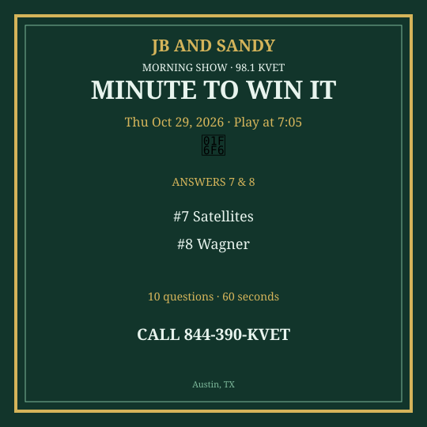

M2W Oct 26-30 2026
New packet. Questions get harder as you go. Graphics are Q7 & Q8 only.
Monday — Mon Oct 26, 2026
Question 1: What do you put in a fireplace?
Answer: Wood / logs
Question 2: How many halves in a football game?
Answer: Two
Question 3: What holiday is October 31?
Answer: Halloween
Question 4: What color is a fire truck usually?
Answer: Red
Question 5: Which sport uses a birdie?
Answer: Badminton
Question 6: What is the capital of Spain?
Answer: Madrid
Question 7: What do you call water vapor turning into liquid?
Answer: Condensation
Question 8: Who wrote “Charlie and the Chocolate Factory”?
Answer: Roald Dahl
Question 9: What is 14 × 2?
Answer: 28
Question 10: Which U.S. state has the most coastline?
Answer: Alaska
Social card for Q7 & Q8 — download and post:
{kind=link}
Tuesday — Tue Oct 27, 2026
Question 1: What do you use to take a photo on a phone?
Answer: Camera
Question 2: How many eggs in a dozen?
Answer: 12
Question 3: What is the name of Austin’s famous spring-fed pool?
Answer: Barton Springs
Question 4: What do you call a storm with a funnel cloud?
Answer: Tornado
Question 5: Which planet is named for the Roman god of war?
Answer: Mars
Question 6: What is tofu made from?
Answer: Soybeans
Question 7: What does ETA stand for?
Answer: Estimated Time of Arrival
Question 8: Who painted “The Persistence of Memory” (melting clocks)?
Answer: Salvador Dalí
Question 9: What is the next number in 2, 4, 8, 16?
Answer: 32
Question 10: Which canal connects the Atlantic and Pacific?
Answer: Panama Canal
Social card for Q7 & Q8 — download and post:
{kind=link}
Wednesday — Wed Oct 28, 2026
Question 1: What do you put on toast?
Answer: Butter / jam
Question 2: How many minutes in a football quarter (NFL)?
Answer: 15
Question 3: What is the name of the Austin trail along the lake?
Answer: Ann and Roy Butler / Town Lake Trail
Question 4: What is 8 × 8?
Answer: 64
Question 5: Which country is Machu Picchu in?
Answer: Peru
Question 6: What is the smallest planet in our solar system?
Answer: Mercury
Question 7: What does VIP stand for?
Answer: Very Important Person
Question 8: Who wrote “The Great Gatsby”?
Answer: F. Scott Fitzgerald
Question 9: What is the atomic number of hydrogen?
Answer: 1
Question 10: In what year did the U.S. declare independence?
Answer: 1776
Social card for Q7 & Q8 — download and post:
{kind=link}
Thursday — Thu Oct 29, 2026
Question 1: What do you use to wash hair?
Answer: Shampoo
Question 2: How many points for a touchdown (no extra)?
Answer: Six
Question 3: What is the name of Texas’s state dinosaur (official)?
Answer: Paluxysaurus / Paluxy
Question 4: What fruit is used to make wine most often?
Answer: Grapes
Question 5: Which country hosted the 2024 Summer Olympics?
Answer: France
Question 6: What is the hardest part of a tooth?
Answer: Enamel
Question 7: What does GPS use to find you?
Answer: Satellites
Question 8: Who composed “Ride of the Valkyries”?
Answer: Wagner
Question 9: What is 21 ÷ 3?
Answer: 7
Question 10: Which African river is the longest?
Answer: Nile
Social card for Q7 & Q8 — download and post:
{kind=link}

Friday — Fri Oct 30, 2026
Question 1: What do kids say on Halloween night?
Answer: Trick or treat
Question 2: How many sides on a cube?
Answer: Six
Question 3: What is the name of Austin’s late-night taco strip?
Answer: South Congress / 24-hour taco joints
Question 4: What is 10 × 10?
Answer: 100
Question 5: Which country is the origin of tacos?
Answer: Mexico
Question 6: What is the study of living things called?
Answer: Biology
Question 7: What does DVD stand for?
Answer: Digital Versatile Disc
Question 8: Who was the first man to walk on the moon?
Answer: Neil Armstrong
Question 9: What is the value of pi to two decimal places?
Answer: 3.14
Question 10: Which U.S. city is called the Windy City?
Answer: Chicago
Social card for Q7 & Q8 — download and post:
{kind=link}